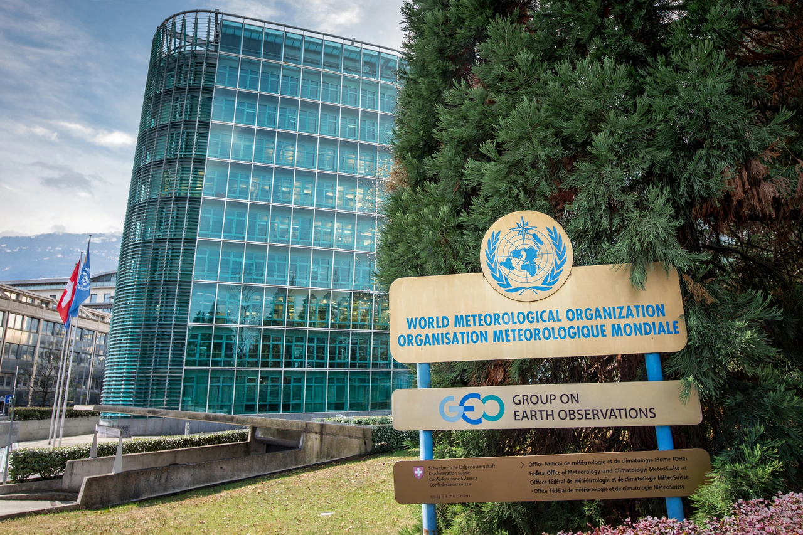

World Meteorological Organization
| World Meteorological Organization | |
|---|---|
| Abbreviation | WMO |
| Founded | 23 March 1950 |
| Headquarters | Geneva, Switzerland |
| Membership | 193 states and territories |
| Parent | United Nations |

The World Meteorological Organization (WMO) is a specialised agency of the United Nations for meteorology, hydrology and related sciences. Founded in 1950 (its convention was adopted in 1947) and heir to the International Meteorological Organization of 1873, it coordinates the global exchange of weather data on which all forecasting depends.
Its near-200 member states and territories run the World Weather Watch: a planetary system of satellites, stations, ships, buoys and aircraft whose observations are shared freely and in real time — often described as one of the most successful examples of international cooperation.
Work
WMO standardises instruments, codes and telecommunications so a forecast in one country can use observations from all others; it runs programmes on tropical cyclones, floods and droughts, atmospheric research (including the Global Atmosphere Watch that monitors greenhouse gases), and publishes the annual State of the Global Climate report, a key reference for Climate change.
Its 'Early Warnings for All' initiative aims to ensure every person on Earth is protected by an early-warning system by 2027, addressing the fact that half of countries lack adequate systems even as weather disasters multiply.
See also: Meteorology · National Oceanic and Atmospheric Administration · Climate change · Natural disaster · Hydrology